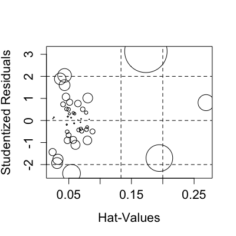

influencePlot(model, ...) influencePlot(model, scale = 10, xlab = "Hat-Values", ylab = "Studentized Residuals", labels, id.method = "noteworthy", id.n = if (id.method[1] == "identify") Inf else 0, id.cex = 1, id.col = palette()[1], ...)
link{showLabels} for details. To omit point labelling, set
id.n=0, the default. The default id.method="noteworthy" is used
only in this function and indicates setting labels for points with large
Studentized residuals, hat-values or Cook's distances. Set
id.method="identify" for interactive point identification.
plot and points functions.
This function creates a “bubble” plot of Studentized residuals by hat values, with the areas of the circles representing the observations proportional to Cook's distances. Vertical reference lines are drawn at twice and three times the average hat value, horizontal reference lines at -2, 0, and 2 on the Studentized-residual scale.
If points are identified, returns a data frame with the hat values, Studentized residuals and Cook's distance of the identified points. If no points are identified, nothing is returned. This function is primarily used for its side-effect of drawing a plot.
Fox, J. (2008) Applied Regression Analysis and Generalized Linear Models, Second Edition. Sage.
Fox, J. and Weisberg, S. (2011) An R Companion to Applied Regression, Second Edition, Sage.

cooks.distance, rstudent,
hatvalues, showLabels